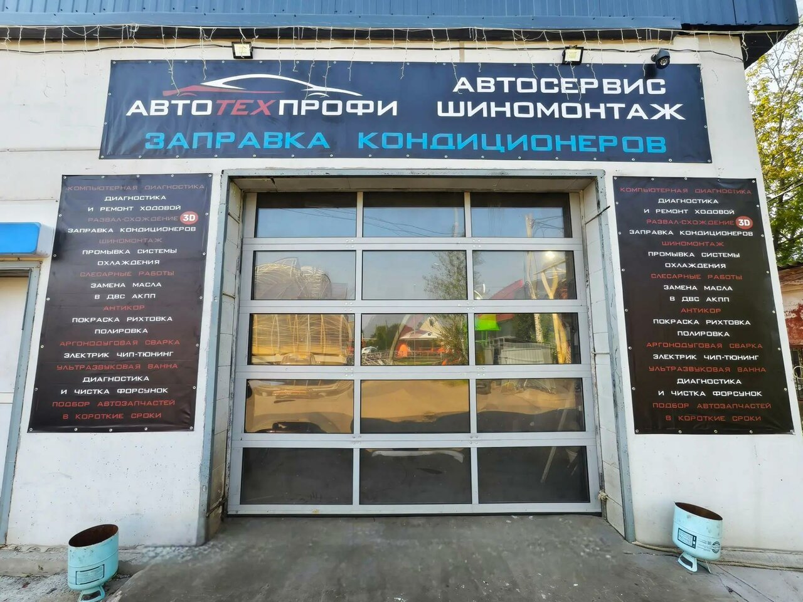

Автосервис · Афонино
АвтоТехПрофи
Ремонт и обслуживание автомобилей в Афонино.
Каждый день с 09:00 до 20:00.

Мастерская
Услуги и цены
Для предварительной записи позвоните и назовите модель автомобиля. Мастер подскажет, сколько времени займёт работа.
Диагностика автомобиля 1 000 ₽
Проверка узлов и агрегатов, включая компьютерную диагностику.
Диагностика топливной системы 500 ₽
Проверка форсунок на стенде, поиск утечек и оценка распыла.
Замена масла в двигателе 1 500 ₽
Снятие и установка защиты картера входят в стоимость работы.
Заправка кондиционера 3 000 ₽
Антикоррозийная обработка 15 000 ₽
Защита днища и скрытых полостей кузова.
Другие работы
- Шиномонтаж и развал-схождение
- Ремонт подвески, тормозов и сцепления
- Замена ремня ГРМ, ремонт ГБЦ и эндоскопия двигателя
- Ремонт системы охлаждения и автоэлектрики
- Ремонт карбюраторов и чистка форсунок
- Замена масла в АКПП, вариаторах и редукторах
- Запасные части под заказ
Фото мастерской
Отзывы водителей
4,9
из 5
56 оценок
«Все оперативно, качественно и профессионально!»
«Заменили фреон и кондиционер снова начал холодить.»
«Работу выполнили качественно и без навязывания лишних услуг.»
Контакты
Как нас найти
Афонино,
Магистральная улица, 20
Парковка у сервиса · Вход с улицы · Ежедневно 09:00–20:00
Оплата наличными, по QR-коду или через СБП.
+7 (962) 506-23-61